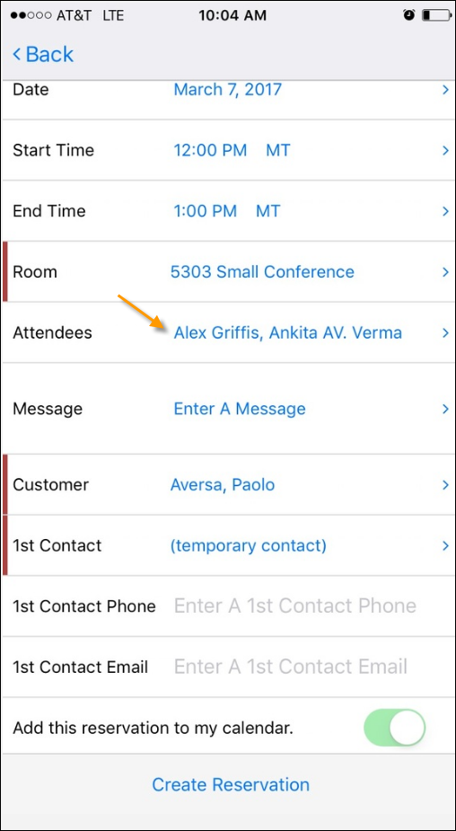
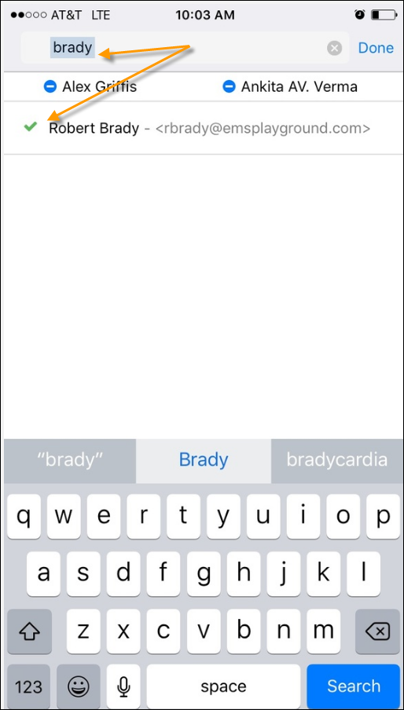
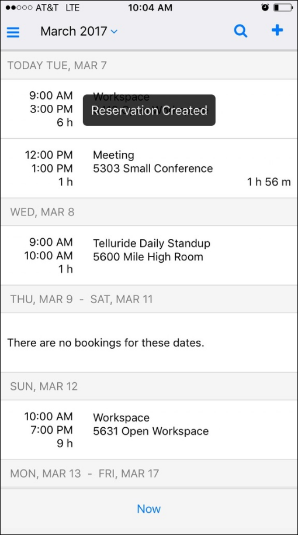

When inviting people to your meetings, it is important to understand the difference between Attendees and Groups.
Attendees—Individuals who are invited to meetings (e.g., invitees).
A Group—The person(s) responsible for the meeting. Your Administrator sets the label for the Group field, so the name might vary (in the example below, it is labeled "Customer").
First Contact—A Group can designate a First Contact to oversee questions, changes, and updates to the meeting. (First Contacts are optional.) First Contacts will receive notifications regarding any meeting changes.


